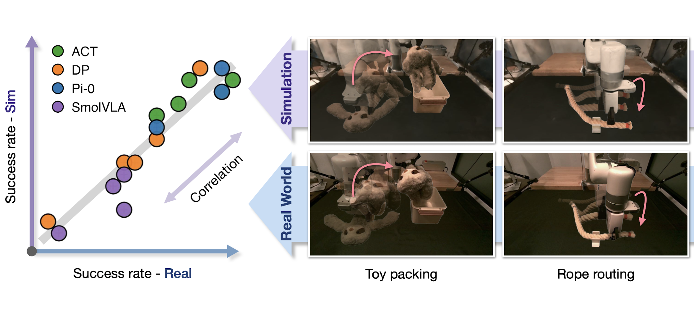

I'm an undergraduate student in Applied Mathematics and Computer Science at Columbia University, working in the RoboPIL Lab advised by Prof. Yunzhu Li. I'm fortunate to receive mentorship from Prof. Antonio Loquerico and Prof. Brian Plancher during my undergrad.
My research interests lie in the intersection of robotics, machine learning, and perception, with the aim of equipping physical agents with more robust, capable, and efficient skillsets to accomplish tasks and interact with the open world.
If you would like to collaborate, feel free to reach out to me!
Updates
- Sep 2025 Both works on Real-to-Sim Policy Evaluation with Gaussian Splatting Simulation and TAG-K: Tail-Averaged Greedy Kaczmarz for Computationally Efficient and Performant Online Inertial Parameter Estimation are under review for ICRA 2026
- Aug 2024 Joined Professor Yunzhu Li's RoboPIL lab, working on designing a residual-augmented teleoperation framework where human operators provide high-level guidance and a residual policy ensures low-level robustness
- Jun 2024 Started my internship at Beijing Academy of Artificial Intelligence training vision-based locomotion policies for the Unitree H1 humanoid robot on agile tasks, under the guidance of Professor Zongqing Lu
- Feb 2024 Joined Professor Brian Plancher's A2R lab, working on a project that extends the Kaczmarz Algorithm for online inertial parameter estimation problems
- Sep 2023 I transferred to Columbia University in my sophomore year to study Applied Math and Computer Science
- Jun 2023 I spent my summer doing research on point cloud registrations using geometric features at Beijing Institute of Technology's State Key Laboratory of Intelligent Control and Decision of Complex Systems
- Apr 2023 My first pde paper was accepted by Canadian Center of Science and Education's Journal of Mathematics Research
- Oct 2022 I started doing computational biology research virtually with Corey O'Hern and wrote a paper on pathogenicity prediction of missense variants
- Sep 2022 I joined University of California, Irvine, to pursue a B.S. in mathematics
Research
-

Real-to-Sim Policy Evaluation with Gaussian Splatting Simulation of Soft-Body Interactions
Under Review for ICRA 2026
-

Analysis of 2D Maxwell's equations in a time-harmonic regime
Journal of Mathematics Research, Canadian Center of Science and Education